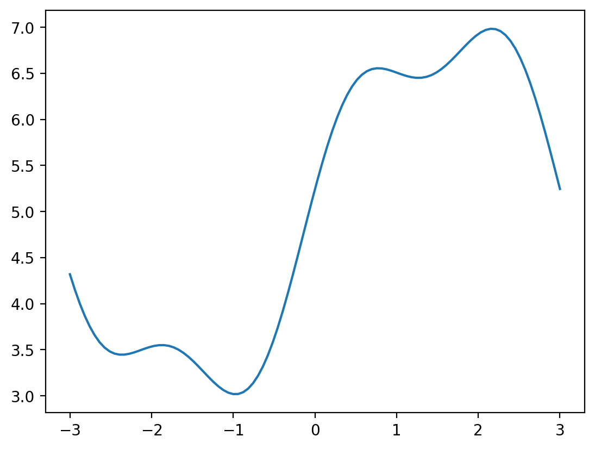
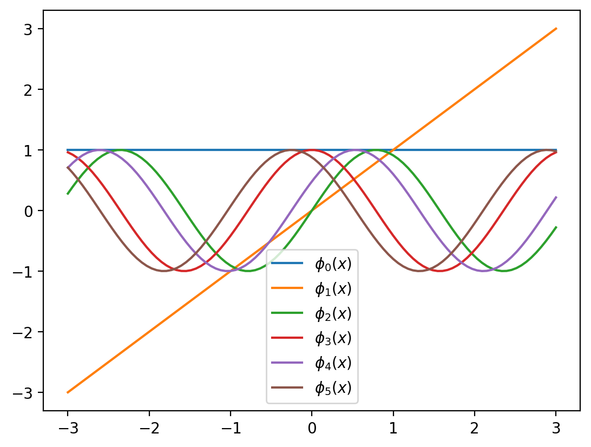
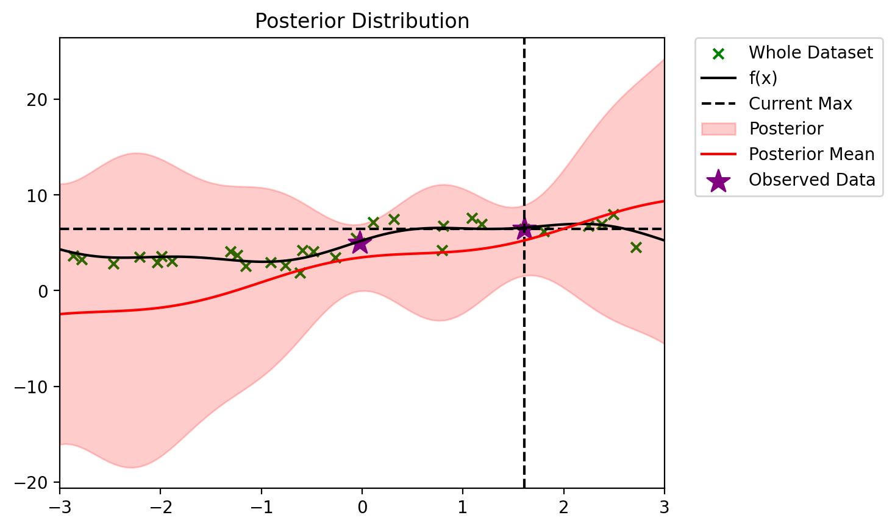
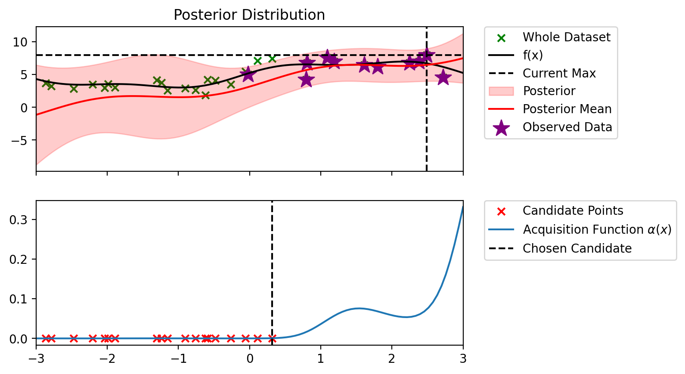
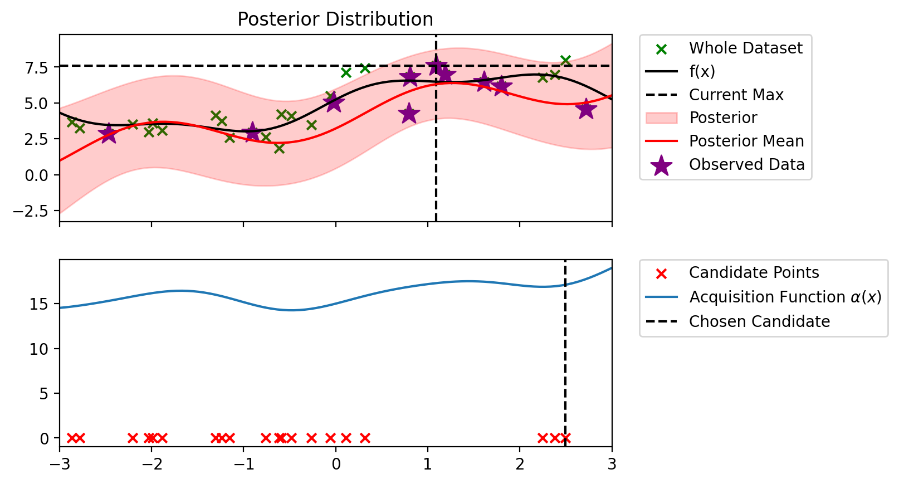

import torch
import matplotlib.pyplot as plt
import torch.distributions as dist
import copy
from functools import partial
# Matplotlib retina
%config InlineBackend.figure_format = 'retina'Bayesian Optimization
x_lin = torch.linspace(-3, 3, 100).reshape(-1, 1)
#f = lambda x: 2*torch.sin(x) + torch.sin(2*x**(1.1) + 1) + 0.3*x + 10
f = lambda x: 2*torch.sin(x) + 0.5*torch.sin(3*x + 0.5) + 5
plt.plot(x_lin, f(x_lin), label='f(x)')
def phi(x, degree=2):
# sin features
# [1, x, sin(x), sin(2x), ..., sin(degree*x)]
# if degree=1, then [1, x]
# if degree=2, then [1, x, sin(x)]
# if degree=3, then [1, x, sin(x), sin(2x)]
x_new = torch.cat([torch.ones_like(x), x], dim=1)
for d in range(2, degree+1):
x_new = torch.cat([x_new, torch.sin(d*x), torch.cos(d*x), torch.sin(d*x + .5), torch.cos(d*x + 0.5)], dim=1)
return x_new
def num_params(degree):
if degree == 1:
return 2 #[1, x]
else:
return 2 + 4*(degree-1)class BLR:
def __init__(self, mu, sigma, sigma_noise, degree=2):
self.current_mean = mu
self.current_sigma = sigma
self.sigma_noise = sigma_noise # Add sigma_noise as an instance variable
self.is_prior_set = True
self.N = 0
self.X_total = None
self.y_total = None
self.degree = degree
def __repr__(self):
return f'BLR(mu={self.current_mean},\n sigma={self.current_sigma}, \nsigma_noise={self.sigma_noise})'
def update(self, X, y):
"""
X: (n_points, n_features)
y: (n_points, 1)
"""
if not self.is_prior_set:
raise Exception('Prior not set')
n_points = X.shape[0]
X_orig = X
X = phi(X, self.degree)
self.current_sigma_inverse = torch.inverse(self.current_sigma)
XTX = torch.matmul(X.T, X)
SN_inverse = self.current_sigma_inverse + XTX / self.sigma_noise**2
SN = torch.inverse(SN_inverse)
self.current_mean = torch.matmul(SN, torch.matmul(self.current_sigma_inverse, self.current_mean) + torch.matmul(X.T, y).ravel() / self.sigma_noise**2)
self.current_sigma = SN
self.N += n_points
if self.X_total is None:
self.X_total = X_orig
self.y_total = y
else:
self.X_total = torch.cat((self.X_total, X_orig), 0)
self.y_total = torch.cat((self.y_total, y), 0)
def predict(self, X):
if not self.is_prior_set:
raise Exception('Prior not set')
X_orig = X
X = phi(X, self.degree)
# Calculate the predictive mean and variance
predictive_mean = torch.matmul(X, self.current_mean)
predictive_variance = self.sigma_noise**2 + torch.diag(torch.matmul(X @ self.current_sigma, X.T))
return predictive_mean, predictive_variance
def plot_predictive(self, X, ax = None):
X_orig = X
X = phi(X, self.degree)
# Posterior distribution
posterior_mean = torch.matmul(X, self.current_mean)
posterior_variance = 1 / self.sigma_noise**2 + torch.diag(torch.matmul(X @ self.current_sigma, X.T))
if ax is None:
fig, ax = plt.subplots(figsize=(10, 6))
ax.set_title("Posterior Distribution")
ax.fill_between(X_orig.ravel().numpy(), (posterior_mean - 2 * posterior_variance).numpy(), (posterior_mean + 2 * posterior_variance).numpy(), color='r', alpha=0.2, label='Posterior')
ax.plot(X_orig.ravel().numpy(), posterior_mean.numpy(), 'r-', label='Posterior Mean')
if self.X_total is not None:
ax.scatter(self.X_total.numpy(), self.y_total.numpy(), c='purple', marker='*', label='Observed Data', s=200)
ax.legend()
ax.set_xlim(X_orig.ravel().min(), X_orig.ravel().max())
return ax
d = 2
phi_x = phi(x_lin, degree=d)for i in range(num_params(d)):
plt.plot(x_lin, phi_x[:, i], label=r'$\phi_{}(x)$'.format(i, i))
plt.legend()<matplotlib.legend.Legend at 0x7f22680283a0>
def init_prior(d):
prior_mu = torch.zeros(num_params(d)) # Adjust for your dimensionality
prior_sigma = torch.eye(num_params(d)) # Adjust for your dimensionality
sigma_noise = 1.0 # Adjust for your noise level
return prior_mu, prior_sigma, sigma_noise
def init_prior_params(d):
prior_params = init_prior(d)
return prior_params + (d, )init_prior_params(d)(tensor([0., 0., 0., 0., 0., 0.]),
tensor([[1., 0., 0., 0., 0., 0.],
[0., 1., 0., 0., 0., 0.],
[0., 0., 1., 0., 0., 0.],
[0., 0., 0., 1., 0., 0.],
[0., 0., 0., 0., 1., 0.],
[0., 0., 0., 0., 0., 1.]]),
1.0,
2)d = 2
blr = BLR(*init_prior_params(d))blrBLR(mu=tensor([0., 0., 0., 0., 0., 0.]),
sigma=tensor([[1., 0., 0., 0., 0., 0.],
[0., 1., 0., 0., 0., 0.],
[0., 0., 1., 0., 0., 0.],
[0., 0., 0., 1., 0., 0.],
[0., 0., 0., 0., 1., 0.],
[0., 0., 0., 0., 0., 1.]]),
sigma_noise=1.0)ax= blr.plot_predictive(x_lin)torch.manual_seed(0)
N_TOT = 30
X_dataset = torch.distributions.Uniform(-3, 3).sample((N_TOT, 1))
f_dataset = f(X_dataset)
y_dataset = f_dataset + torch.distributions.Normal(0, 1.0).sample((N_TOT, 1))
def plot_dataset(ax=None):
if ax is None:
fig, ax = plt.subplots()
# Plot the dataset
ax.scatter(X_dataset.numpy(), y_dataset.numpy(), c='g', marker='x', label='Whole Dataset')
ax.plot(x_lin, f(x_lin), label='f(x)',c = 'k')
ax.legend()
ax.set_xlim(-3, 3)
plot_dataset()# Add the first 1 data points to the model
d = 2
blr = BLR(*init_prior_params(d))
blr.update(X_dataset[:1], y_dataset[:1])blrBLR(mu=tensor([ 1.2552, -0.0282, -0.0564, 1.2539, 0.5517, 1.1274]),
sigma=tensor([[ 7.5003e-01, 5.6144e-03, 1.1225e-02, -2.4972e-01, -1.0987e-01,
-2.2453e-01],
[ 5.6144e-03, 9.9987e-01, -2.5212e-04, 5.6087e-03, 2.4677e-03,
5.0430e-03],
[ 1.1225e-02, -2.5212e-04, 9.9950e-01, 1.1214e-02, 4.9338e-03,
1.0083e-02],
[-2.4972e-01, 5.6087e-03, 1.1214e-02, 7.5054e-01, -1.0976e-01,
-2.2430e-01],
[-1.0987e-01, 2.4677e-03, 4.9338e-03, -1.0976e-01, 9.5171e-01,
-9.8688e-02],
[-2.2453e-01, 5.0430e-03, 1.0083e-02, -2.2430e-01, -9.8688e-02,
7.9832e-01]]),
sigma_noise=1.0)ax = blr.plot_predictive(x_lin)
#plot_dataset(ax=ax)# Add the next 1 data points to the model
blr.update(X_dataset[1:2], y_dataset[1:2])ax = blr.plot_predictive(x_lin)
plot_dataset(ax=ax)blrBLR(mu=tensor([ 2.7943, 1.9381, -0.1648, 0.3441, 0.0203, 0.3810]),
sigma=tensor([[ 5.0107e-01, -3.1243e-01, 2.8769e-02, -1.0255e-01, -2.3920e-02,
-1.0379e-01],
[-3.1243e-01, 5.9358e-01, 2.2160e-02, 1.9360e-01, 1.1227e-01,
1.5928e-01],
[ 2.8769e-02, 2.2160e-02, 9.9826e-01, 8.4362e-04, -1.1228e-03,
1.5747e-03],
[-1.0255e-01, 1.9360e-01, 8.4362e-04, 6.6355e-01, -1.6056e-01,
-2.9567e-01],
[-2.3920e-02, 1.1227e-01, -1.1228e-03, -1.6056e-01, 9.2204e-01,
-1.4037e-01],
[-1.0379e-01, 1.5928e-01, 1.5747e-03, -2.9567e-01, -1.4037e-01,
7.3977e-01]]),
sigma_noise=1.0)# instead, add the two data points at once
d = 2
blr_new = BLR(*init_prior(d))
blr_new.update(X_dataset[:2], y_dataset[:2])blrBLR(mu=tensor([ 2.7943, 1.9381, -0.1648, 0.3441, 0.0203, 0.3810]),
sigma=tensor([[ 5.0107e-01, -3.1243e-01, 2.8769e-02, -1.0255e-01, -2.3920e-02,
-1.0379e-01],
[-3.1243e-01, 5.9358e-01, 2.2160e-02, 1.9360e-01, 1.1227e-01,
1.5928e-01],
[ 2.8769e-02, 2.2160e-02, 9.9826e-01, 8.4362e-04, -1.1228e-03,
1.5747e-03],
[-1.0255e-01, 1.9360e-01, 8.4362e-04, 6.6355e-01, -1.6056e-01,
-2.9567e-01],
[-2.3920e-02, 1.1227e-01, -1.1228e-03, -1.6056e-01, 9.2204e-01,
-1.4037e-01],
[-1.0379e-01, 1.5928e-01, 1.5747e-03, -2.9567e-01, -1.4037e-01,
7.3977e-01]]),
sigma_noise=1.0)blr_newBLR(mu=tensor([ 2.7943, 1.9381, -0.1648, 0.3441, 0.0203, 0.3810]),
sigma=tensor([[ 5.0107e-01, -3.1243e-01, 2.8769e-02, -1.0255e-01, -2.3920e-02,
-1.0379e-01],
[-3.1243e-01, 5.9358e-01, 2.2160e-02, 1.9360e-01, 1.1227e-01,
1.5928e-01],
[ 2.8769e-02, 2.2160e-02, 9.9826e-01, 8.4362e-04, -1.1228e-03,
1.5747e-03],
[-1.0255e-01, 1.9360e-01, 8.4362e-04, 6.6355e-01, -1.6056e-01,
-2.9567e-01],
[-2.3920e-02, 1.1227e-01, -1.1228e-03, -1.6056e-01, 9.2204e-01,
-1.4037e-01],
[-1.0379e-01, 1.5928e-01, 1.5747e-03, -2.9567e-01, -1.4037e-01,
7.3977e-01]]),
sigma_noise=1.0)blr_new.plot_predictive(x_lin)<AxesSubplot:title={'center':'Posterior Distribution'}># Entire dataset
def plot_fit(degree):
blr = BLR(*init_prior_params(degree))
blr.update(X_dataset, y_dataset)
ax = blr.plot_predictive(x_lin)
plot_dataset(ax=ax)
plt.title(f'Degree {degree}')
plt.show()
plot_fit(1)plot_fit(2)plot_fit(3)
plot_fit(4)plot_fit(6)d = 2
blr = BLR(*init_prior_params(d))
# Fit first 2 points
blr.update(X_dataset[:2], y_dataset[:2])blr.current_meantensor([ 2.7943, 1.9381, -0.1648, 0.3441, 0.0203, 0.3810])def plot_maximum(blr, ax=None):
if ax is None:
fig, ax = plt.subplots()
# Plot the dataset
ax.scatter(X_dataset.numpy(), y_dataset.numpy(), c='g', marker='x', label='Whole Dataset')
ax.plot(x_lin, f(x_lin), label='f(x)',c = 'k')
ax.set_xlim(-3, 3)
# Plot the current maximum
y_max = blr.y_total.max()
x_max = blr.X_total[blr.y_total.argmax()]
ax.axhline(y_max, c='k', linestyle='--', label='Current Max')
ax.axvline(x_max, c='k', linestyle='--')
# Plot BLR predictive
ax = blr.plot_predictive(x_lin, ax=ax)
# Put legend outside of plot
ax.legend(bbox_to_anchor=(1.05, 1), loc='upper left', borderaxespad=0.)
return ax
plot_maximum(blr)<AxesSubplot:title={'center':'Posterior Distribution'}>
def plot_maximum_and_acq(blr, acq_fn, candidate_points_x):
fig, ax = plt.subplots(nrows=2, sharex=True)
plot_maximum(blr, ax=ax[0])
# Mark locations of candidate points on PI plot
ax[1].scatter(candidate_points_x, torch.zeros_like(candidate_points_x), c='r', marker='x', label='Candidate Points')
alpha = acq_fn(blr, x_lin, blr.y_total.max())
ax[1].plot(x_lin, alpha, label=r'Acquisition Function $\alpha(x)$')
# legend outside of plot
# Chosen candidate point
alp_candidate = acq_fn(blr, candidate_points_x, blr.y_total.max())
x_candidate = candidate_points_x[alp_candidate.argmax()]
ax[1].axvline(x_candidate, c='k', linestyle='--', label='Chosen Candidate')
ax[1].legend(bbox_to_anchor=(1.05, 1), loc='upper left', borderaxespad=0.)
def plot_filled_cdf(mu, sigma, above):
# Create a normal distribution with the specified mean and standard deviation
normal_dist = dist.Normal(mu, sigma)
# Generate a range of y values
y_values = torch.linspace(mu - 10 * sigma, mu + 10 * sigma, 2000)
# Calculate the probability density at each y value
pdf_values = normal_dist.log_prob(y_values).exp()
# Create a mask to select values above the specified "above" value
mask = y_values >= above
# Plot the vertical line at "above"
plt.axhline(above, c='k', linestyle='--', label=f'Above {above}')
# Plot the PDF
plt.plot(pdf_values.numpy(), y_values.numpy(), label='PDF')
z0 = torch.tensor((mu - above)/sigma)
phi = dist.Normal(0, 1).cdf(z0)
# Fill the area under the CDF curve for values above "above"
plt.fill_betweenx(y_values.numpy(), pdf_values.numpy(),
where=mask, alpha=0.2, color='r',
label=f'CDF Above {above} = {phi:.4f}')
plt.xlabel('PDF')
plt.ylabel('Y')
plt.legend()
plt.show()import ipywidgets as widgets
from IPython.display import display# Create interactive widgets for mu, sigma, and above
mu_widget = widgets.FloatSlider(value=0.5, min=-1, max=1, step=0.1, description='Mean:')
sigma_widget = widgets.FloatSlider(value=0.5, min=0.1, max=2, step=0.1, description='Standard Deviation:')
above_widget = widgets.FloatSlider(value=0.6, min=-1, max=1, step=0.1, description='Above Value:')
# Create an interactive output
out = widgets.interactive_output(plot_filled_cdf, {'mu': mu_widget, 'sigma': sigma_widget, 'above': above_widget})
# Display the widgets and output
display(widgets.VBox([mu_widget, sigma_widget, above_widget, out]))def alpha_PI(model, x_lin, y_max, eps=1e-1):
"""
model: BLR model
x_lin: (n_points, d)
y_max: current maximum
eps: exploration parameter
"""
# Get the predictive mean and variance
predictive_mean, predictive_variance = model.predict(x_lin)
# Calculate the PI acquisition function
z0 = (predictive_mean - y_max - eps) / torch.sqrt(predictive_variance)
# Evaluate CDF of the standard normal at alpha
alpha = torch.distributions.Normal(0, 1).cdf(z0)
return alphadef setdiff1d(a, b):
mask = ~a.unsqueeze(1).eq(b).any(dim=1)
return torch.masked_select(a, mask)alpha = alpha_PI(blr, x_lin, blr.y_total.max())
candidate_points_x = setdiff1d(X_dataset, blr.X_total).reshape(-1, 1)
plot_maximum_and_acq(blr, alpha_PI, candidate_points_x)
y_max = blr.y_total.max()
mu_0, sigma_0 = blr.predict(x_lin[0:1])
above = y_max
plot_filled_cdf(mu_0.item(), sigma_0.item()**0.5, above)/tmp/ipykernel_225842/1988263787.py:20: UserWarning: To copy construct from a tensor, it is recommended to use sourceTensor.clone().detach() or sourceTensor.clone().detach().requires_grad_(True), rather than torch.tensor(sourceTensor).
z0 = torch.tensor((mu - above)/sigma)def bo_loop(blr, n_iter, acq_fun):
y_max = blr.y_total.max()
for iterations in range(n_iter):
candidate_points_x = setdiff1d(X_dataset, blr.X_total).reshape(-1, 1)
candidate_points_y = setdiff1d(y_dataset, blr.y_total)
plot_maximum_and_acq(blr, acq_fun, candidate_points_x)
alpha_candidate = acq_fun(blr, candidate_points_x, y_max)
to_add_idx = alpha_candidate.argmax()
to_add_x = candidate_points_x[to_add_idx].view(-1, 1)
to_add_y = candidate_points_y[to_add_idx].view(-1, 1)
print(f"Index: {to_add_idx.item()}, x: {to_add_x.item():0.3f}, y: {to_add_y.item():0.3f}")
blr.update(to_add_x, to_add_y)
print(f'Iteration {iterations+1} f(x+) = {blr.y_total.max():0.3f}')
print()import copy
blr_copy = copy.deepcopy(blr)
bo_loop(blr_copy, 10, alpha_PI)Index: 24, x: 2.716, y: 4.546
Iteration 1 f(x+) = 6.479
Index: 18, x: 1.090, y: 7.590
Iteration 2 f(x+) = 7.590
Index: 3, x: 0.804, y: 6.802
Iteration 3 f(x+) = 7.590
Index: 6, x: 0.794, y: 4.239
Iteration 4 f(x+) = 7.590
Index: 12, x: 1.186, y: 6.964
Iteration 5 f(x+) = 7.590
Index: 12, x: 1.800, y: 6.170
Iteration 6 f(x+) = 7.590
Index: 14, x: 2.491, y: 7.997
Iteration 7 f(x+) = 7.997
Index: 4, x: 2.379, y: 6.983
Iteration 8 f(x+) = 7.997
Index: 14, x: 2.245, y: 6.776
Iteration 9 f(x+) = 7.997
Index: 15, x: 0.317, y: 7.446
Iteration 10 f(x+) = 7.997

def alpha_ucb(model, x_lin, y_max, beta=100):
"""
model: BLR model
x_lin: (n_points, d)
y_max: current maximum
beta: exploration parameter
"""
# Get the predictive mean and variance
predictive_mean, predictive_variance = model.predict(x_lin)
# Calculate the UCB acquisition function
alpha = predictive_mean + beta * torch.sqrt(predictive_variance)
return alpha
alpha_ucb_0_1 = partial(alpha_ucb, beta=0.1)
alpha_ucb_1 = partial(alpha_ucb, beta=1)
alpha_ucb_10 = partial(alpha_ucb, beta=10)blr_copy = copy.deepcopy(blr)
bo_loop(blr_copy, 10, alpha_ucb_0_1)Index: 24, x: 2.716, y: 4.546
Iteration 1 f(x+) = 6.479
Index: 19, x: 2.491, y: 7.997
Iteration 2 f(x+) = 7.997
Index: 5, x: 2.379, y: 6.983
Iteration 3 f(x+) = 7.997
Index: 19, x: 2.245, y: 6.776
Iteration 4 f(x+) = 7.997
Index: 14, x: 1.800, y: 6.170
Iteration 5 f(x+) = 7.997
Index: 13, x: 1.186, y: 6.964
Iteration 6 f(x+) = 7.997
Index: 15, x: 1.090, y: 7.590
Iteration 7 f(x+) = 7.997
Index: 3, x: 0.804, y: 6.802
Iteration 8 f(x+) = 7.997
Index: 5, x: 0.794, y: 4.239
Iteration 9 f(x+) = 7.997
Index: 15, x: 0.317, y: 7.446
Iteration 10 f(x+) = 7.997

blr_copy = copy.deepcopy(blr)
bo_loop(blr_copy, 10, alpha_ucb_10)Index: 24, x: 2.716, y: 4.546
Iteration 1 f(x+) = 6.479
Index: 8, x: -0.907, y: 2.925
Iteration 2 f(x+) = 6.479
Index: 0, x: -2.469, y: 2.848
Iteration 3 f(x+) = 6.479
Index: 16, x: 1.090, y: 7.590
Iteration 4 f(x+) = 7.590
Index: 12, x: 1.186, y: 6.964
Iteration 5 f(x+) = 7.590
Index: 2, x: 0.804, y: 6.802
Iteration 6 f(x+) = 7.590
Index: 11, x: 1.800, y: 6.170
Iteration 7 f(x+) = 7.590
Index: 5, x: 0.794, y: 4.239
Iteration 8 f(x+) = 7.590
Index: 12, x: 2.491, y: 7.997
Iteration 9 f(x+) = 7.997
Index: 3, x: 2.379, y: 6.983
Iteration 10 f(x+) = 7.997

def alpha_thompson(model, x_lin, y_max, n_samples=100):
"""
model: BLR model
x_lin: (n_points, d)
y_max: current maximum
n_samples: number of samples to draw from the posterior
"""
torch.manual_seed(0)
# Get the predictive mean and variance
predictive_mean, predictive_variance = model.predict(x_lin)
# Sample from the posterior
posterior_sample = dist.Normal(predictive_mean, torch.sqrt(predictive_variance)).sample()
# Calculate the PI acquisition function
alpha = posterior_sample
return alphablr_copy = copy.deepcopy(blr)
bo_loop(blr_copy, 10, alpha_thompson)Index: 5, x: 2.379, y: 6.983
Iteration 1 f(x+) = 6.983
Index: 20, x: 2.245, y: 6.776
Iteration 2 f(x+) = 6.983
Index: 18, x: 2.491, y: 7.997
Iteration 3 f(x+) = 7.997
Index: 21, x: 2.716, y: 4.546
Iteration 4 f(x+) = 7.997
Index: 18, x: -0.617, y: 1.858
Iteration 5 f(x+) = 7.997
Index: 17, x: 1.090, y: 7.590
Iteration 6 f(x+) = 7.997
Index: 14, x: 1.800, y: 6.170
Iteration 7 f(x+) = 7.997
Index: 13, x: 1.186, y: 6.964
Iteration 8 f(x+) = 7.997
Index: 16, x: 0.317, y: 7.446
Iteration 9 f(x+) = 7.997
Index: 3, x: 0.804, y: 6.802
Iteration 10 f(x+) = 7.997